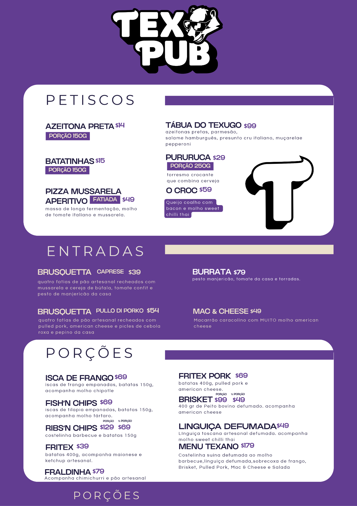
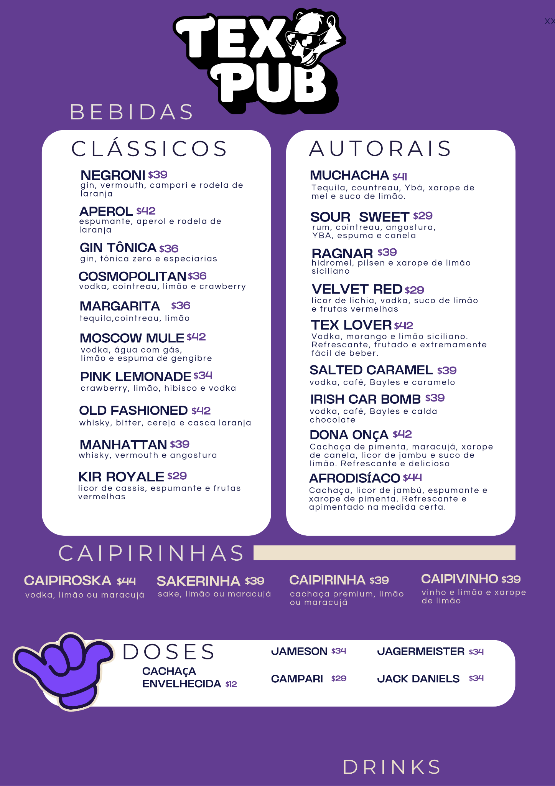
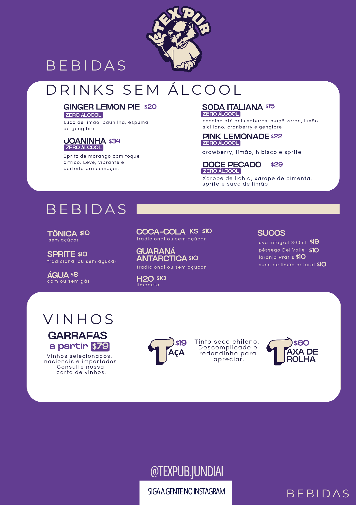

01 / CHOPES & DEGUSTAÇÃO

02 / PETISCOS, ENTRADAS & PORÇÕES

03 / PIZZAS, LANCHES & SOBREMESAS

04 / DRINKS & DOSES

05 / SEM ÁLCOOL, BEBIDAS & VINHOS

Toque em qualquer página para ampliar.
Explore os sabores do TEX. Escolha uma categoria abaixo e aproveite!



Toque em qualquer página para ampliar.